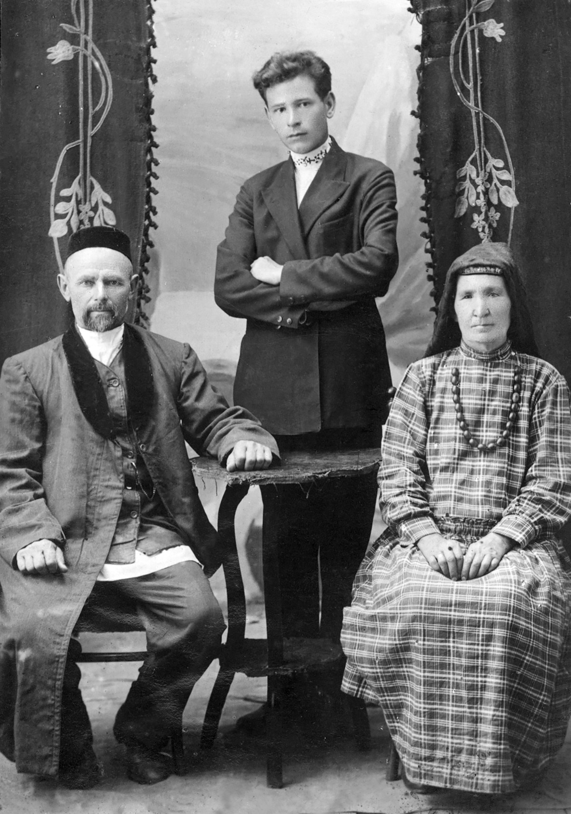
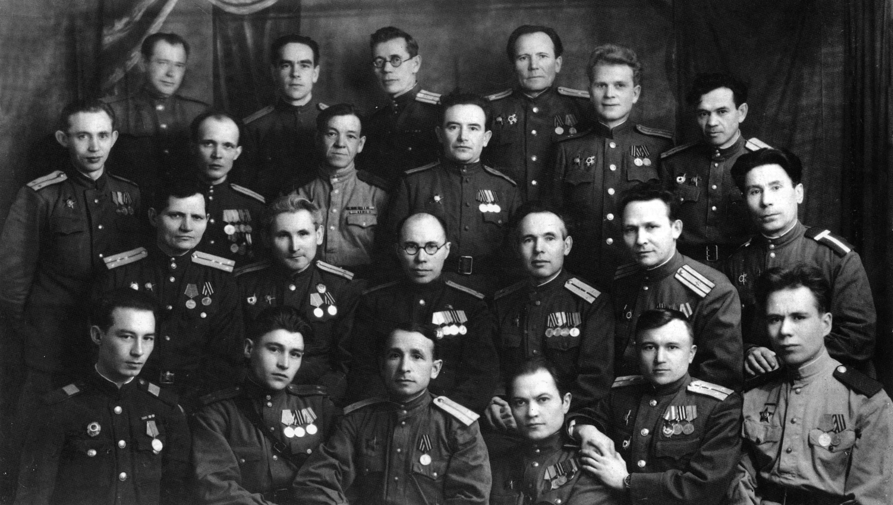

Биография Амирхана Еники
► Детство и юность
Амирхан Нигметзянович Еники (Еникеев) родился 2 марта 1909 года в деревне Верхние Каргалы. Он был десятым ребёнком в семье, единственным из выживших. Несмотря на крестьянский образ жизни, родители Амирхана Еники были потомками мурз Еникеевых.
На фото запечатлены (слева направо): отец писателя Нигметзян Еникеев, молодой Амирхан Еники и мать писателя Бибихадича Еникеева.
Амирхан Нигметзянович Еники (Еникеев) родился 2 марта 1909 года в деревне Верхние Каргалы. Он был десятым ребёнком в семье, единственным из выживших. Несмотря на крестьянский образ жизни, родители Амирхана Еники были потомками мурз Еникеевых.
На фото запечатлены (слева направо): отец писателя Нигметзян Еникеев, молодой Амирхан Еники и мать писателя Бибихадича Еникеева.


► Творчество
► Достижения
Среди достижений Амирхана Еники можно выделить следующие:
Среди достижений Амирхана Еники можно выделить следующие:
- Государственная премия РТ имени Г. Тукая